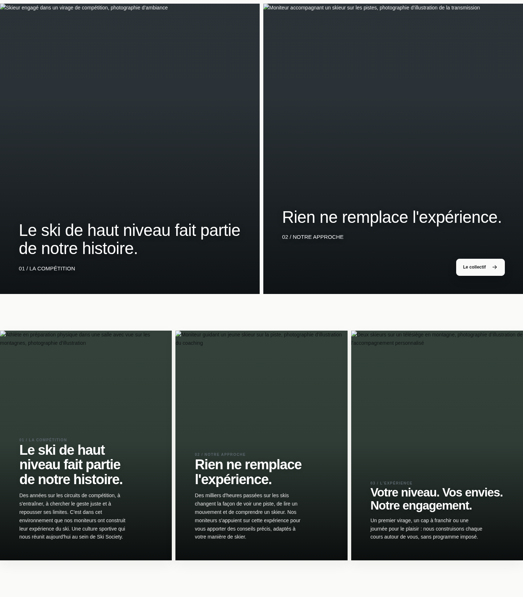
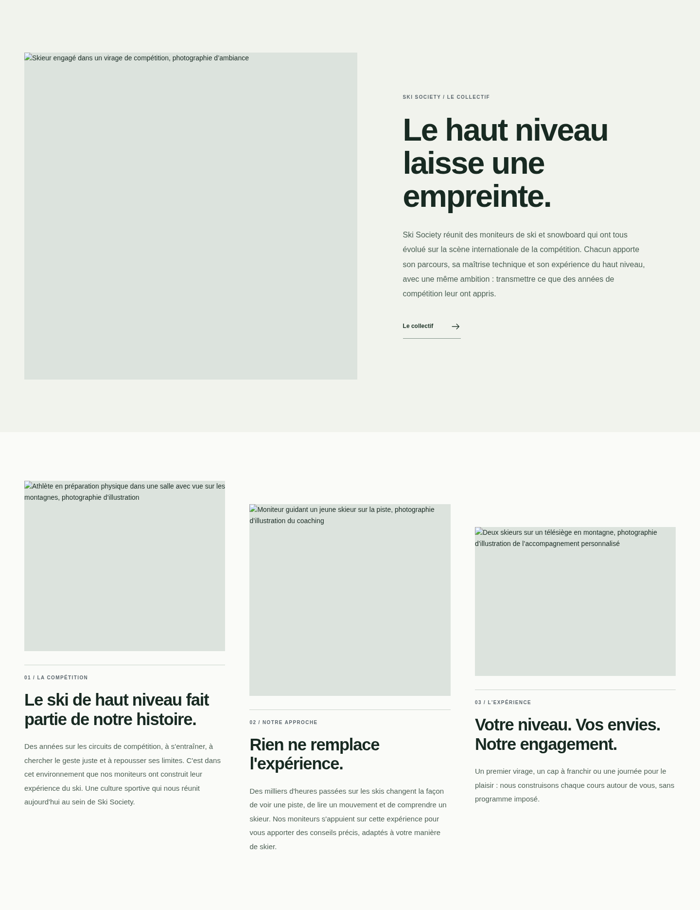
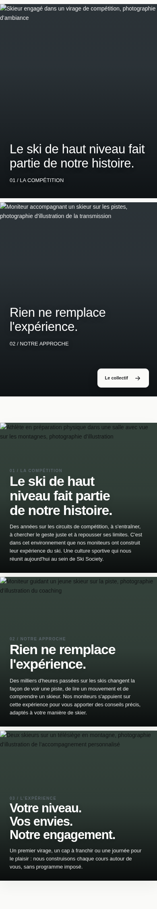
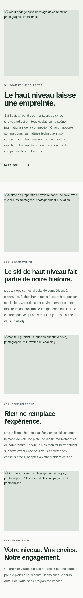

ADN du collectif — avant / après
Référence avant : f321a69. Périmètre : introduction et trois contenus ADN de la page d’accueil uniquement.
Ordinateur — 1440 px




Mobile — 390 px




Référence avant : f321a69. Périmètre : introduction et trois contenus ADN de la page d’accueil uniquement.



